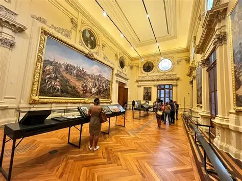

Anita Catarina Malfatti
@ea_a_moreninha_da_pintura· 1889 – 1964
5
obras
7
décadas ativa
20000000000000000000000000
admiradores
Anita Malfatti foi uma pintora brasileira nascida em São Paulo, em 1889, e uma das principais representantes do Modernismo no Brasil. Estudou arte no Brasil, na Alemanha e nos Estados Unidos, onde teve contato com o expressionismo. Sua exposição de 1917 revolucionou a arte brasileira com cores fortes e formas modernas, influenciando a Semana de Arte Moderna de 1922 e a renovação da arte no país.
“A arte é a expressão mais sincera da alma.”
Obras em Destaque
5 obras

A Estudante Russa
1915· Coleção particular
Óleo sobre tela · 50x40cm
Jovem com expressividade e cores fortes.
Coleção particular

O Homem Amarelo
1915· Museu de arte de São Paulo
Óleo sobre tela·85x55cm
Figura humana com cores vibrantes e formas distorcidas.
Museu de arte de São Paulo
A Boba
1915· Museu de arte de São Paulo
Óleo sobre tela· 60x45cm
Figura feminina com expressão introspectiva
Museu de arte de São Paulo

A menina com laranja
1917·Museu de arte de São Paulo
Óleo sobre tela · 50x40cm
Expressão sobre vida cotidiana com modernismo.
Museu de arte de São Paulo
Paisagem da Figueira
1918·Museu de arte de São Paulo
Óleo sobre tela · 60x40
Exploração do expresssionismo na paisagem.
Museu de arte de São Paulo
Adicione mais obras copiando um card acima
<
Anita Malfatti
Anita Malfatti foi uma importante pintora brasileira e uma das pioneiras do modernismo no Brasil. Nasceu em São Paulo, em 1889, e desde jovem demonstrou talento para a arte, mesmo enfrentando uma deficiência no braço direito.
Estudou arte na Alemanha e nos Estados Unidos, onde conheceu movimentos modernos como o expressionismo. Ao voltar ao Brasil, realizou uma exposição em 1917 que causou muita polêmica por apresentar um estilo inovador e diferente da arte tradicional.
Anita participou da Semana de Arte Moderna, tornando-se um dos principais nomes do modernismo brasileiro. Suas obras ajudaram a transformar a arte no país, incentivando mais liberdade criativa e novas formas de expressão.
Hoje, é reconhecida como uma das artistas mais importantes da história da arte brasileira.
Anita Malfatti estudou arte no Brasil e se transformou após viajar aos EUA e Europa, onde conheceu as vanguardas modernas. Sua exposição de 1917 chocou o público, mas marcou o início do modernismo no Brasil. Depois, aproximou-se de artistas modernistas e continuou desenvolvendo um estilo expressivo e inovador. Tornou-se referência do movimento e influenciou a arte brasileira até sua morte em 1964.
Continue com mais detalhes sobre as diferentes fases de sua carreira, viagens que fez, outros artistas com quem conviveu e eventos históricos que influenciaram sua obra.
Anita Malfatti estudou arte no Brasil e se transformou após viajar aos EUA e Europa, onde conheceu as vanguardas modernas. Sua exposição de 1917 chocou o público, mas marcou o início do modernismo no Brasil. Depois, aproximou-se de artistas modernistas e continuou desenvolvendo um estilo expressivo e inovador. Tornou-se referência do movimento e influenciou a arte brasileira até sua morte em 1964.
Continue com mais detalhes sobre as diferentes fases de sua carreira, viagens que fez, outros artistas com quem conviveu e eventos históricos que influenciaram sua obra.
Ficha do Artista
Nome completo
Anita Catarina Malfatti
Nascimento
2 de dezembro de 1889· São Paulo, Brasil
Falecimento
6 de novembro de 1964· São Paulo,Brasil
Movimento
Modernismo
Técnicas
Óleo sobre tela, aquarela e desenho
Museus
Museu de Arte de São Paulo(MASP), acervos particulares
Influências
Van Gogh e Vanguarda europeia
Influenciou
Mario de Andrade, Oswald de Andrade, Tarsila do Amaral
Contexto Histórico
1889
Nascimento
1905
Início da Formação Artística
1915
Criação da Obra Mais Famosa
1917
Reconhecimento / Prêmio
1964
Falecimento e Legado